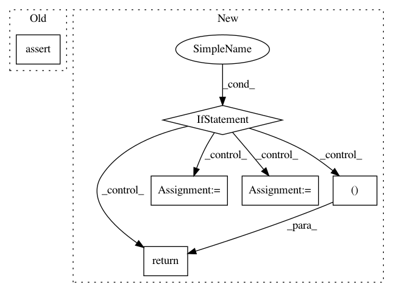

ebbc9fc0fc52a650ebd5bbbd954733bada35672e,niftynet/layer/histogram_normalisation.py,HistogramNormalisationLayer,layer_op,#HistogramNormalisationLayer#Any#Any#,58
Before Change
self.modalities = modalities
def layer_op(self, image_5d, mask=None):
assert image_5d.ndim == 5
image_5d = np.asarray(image_5d, dtype=float)
image_mask = None
if mask is not None:
After Change
normalised = self._normalise_5d(image_5d, image_mask)
if isinstance(image, dict):
image[self.field] = normalised
if isinstance(mask, dict):
mask[self.field] = image_mask
else:
mask = {self.field: image_mask}
return image, mask
else:
return normalised, image_mask
def __check_modalities_to_train(self):
modalities_to_train = [mod for mod in self.modalities
if not mod in self.mapping]
return set(modalities_to_train)
In pattern: SUPERPATTERN
Frequency: 3
Non-data size: 6
Instances
Project Name: NifTK/NiftyNet
Commit Name: ebbc9fc0fc52a650ebd5bbbd954733bada35672e
Time: 2017-08-08
Author: wenqi.li@ucl.ac.uk
File Name: niftynet/layer/histogram_normalisation.py
Class Name: HistogramNormalisationLayer
Method Name: layer_op
Project Name: NifTK/NiftyNet
Commit Name: baecce5a6fbe4576ca8348a93dc56f07e7ba84f6
Time: 2019-06-05
Author: ucabtmv@ucl.ac.uk
File Name: niftynet/contrib/csv_reader/csv_reader.py
Class Name: CSVReader
Method Name: _parse_csv
Project Name: microsoft/nni
Commit Name: d165905d0ba24cfba414b8e0c20fa8d7c8ab6a6e
Time: 2020-12-10
Author: Quanlu.Zhang@microsoft.com
File Name: nni/retiarii/converter/graph_gen.py
Class Name:
Method Name: convert_module